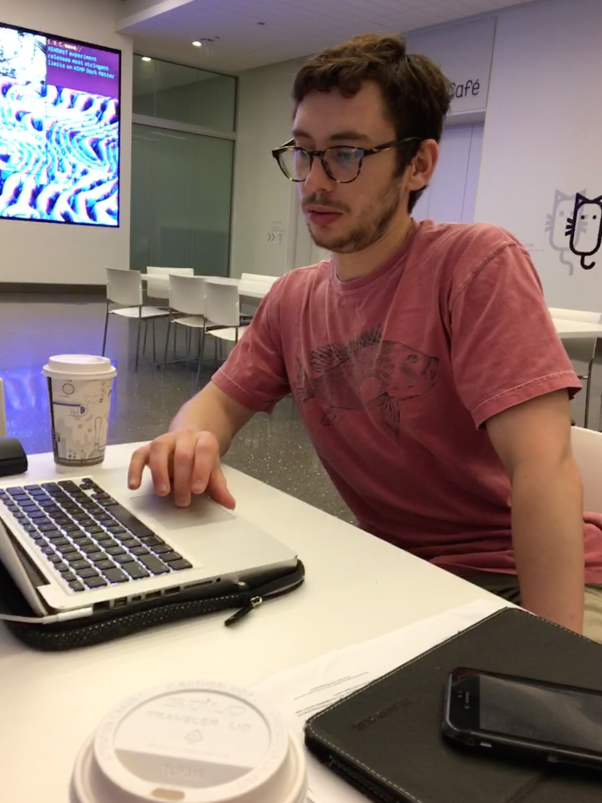

|
I recently completed my Ph.D. in the Department of
Linguistics at the University of
Chicago. My main areas of research are semantics and language processing. My dissertation is on a scope-based framework for semantic presupposition. I have also worked on phenomena involving ellipsis. |
 |
|
Education and Experience |
Ph.D., Linguistics, 2019 |
Work in progress |
Grove, Julian, Emily Hanink, and Ming Xiang. In preparation. Three studies of syntactic priming in comprehension by verb phrase ellipsis. |
Publications |
Xiang, Ming, Julian Grove, and Jason Merchant. 2019. Structural priming in production through `silence': An investigation of verb phrase ellipsis and null complement anaphora. In Glossa: A Journal of General Linguistics, 4(1), 67. doi: http://doi.org/10.5334/gjgl.726. Hanink, Emily and Julian Grove. 2017. German relative clauses and the severed-index hypothesis. In Proceedings of the 34th annual meeting of the West Coast Conference on Formal Linguistics. ed. Aaron Kaplan et al., 241-248. Somerville, MA: Cascadilla Proceedings Project. (pdf) Grove, Julian, and Emily Hanink. 2016. Article selection and anaphora in the German relative clause. In Proceedings of the 24th Conference on Semantics and Linguistic Theory, ed. Mary Maroney, Carol-Rose Little, Jacob Collard, and Dan Burgdorf, 417-432. Ithaca, NY: Cornell. doi: 10.3765/salt.v26i0.3806 (pdf) Xiang, Ming, Julian Grove, and Anastasia Giannakidou. 2016. Semantic and pragmatic processes in the comprehension of negation: an event related potential study of negative polarity sensitivity. In Journal of Neurolinguistics, 38:71-88. doi: 10.1016/j.jneuroling.2015.11.001. (pdf) Grove, Julian. 2015. Singular count pseudo-partitives. In Proceedings of Sinn und Bedeutung 19, ed. Eva Csipak and Hedde Zeijlstra, 248-265. Göttingen. (pdf) (proceedings) Xiang, Ming, Julian Grove, and Jason Merchant. Submitted. Ellipsis sites induce structural priming effects. (Manuscript; please, do not cite without permission.) (pdf) Grove, Julian. 2014. The lexical semantics of much: conversion from intervals to degrees. In Proceedings of the 44th Annual Meeting of the North Eastern Linguistic Society, ed. Jyoti Iyer and Leland Kusmer, 163-176. Amherst: GLSA Publications. (preprint) (proceedings) Xiang, Ming, Julian Grove, and Anastasia Giannakidou. 2013. Dependency-dependent interference: NPI interference, agreement attraction, and global pragmatic inferences. Frontiers in Psychology, 4(708). doi: 10.3389/fpsyg.2013.00708. (pdf) |
Presentations |
Oral Hanink, Emily and Julian Grove. 2016. German relative clauses and the severed-index hypothesis. Talk presented at the 52nd annual meeting of the Chicago Linguistic Society. April, Chicago. (handout) Grove, Julian. 2014. The ubiquitous pseudopartitive head: evidence from Spanish and English. Talk presented at GWAMP 14, University of Wisconsin-Milwaukee. October, Milwaukee. (slides) Grove, Julian. 2014. Singular count pseudopartitives. Talk presented at Sinn und Bedeutung 19. September, Göttingen. (slides) Grove, Julian. 2014. The semantics of much-support. Paper presented at the 88th annual meeting of the Linguistic Society of America. January, Minneapolis. (handout) Grove, Julian. 2013. The lexical semantics of much: conversion from intervals to degrees. Talk presented at the 44th annual meeting of the North Eastern Linguistic Society. October, Storrs. (handout) Poster Grove, Julian. 2015. Semantics layers in DP. Poster presented at the 33rd annual meeting of the West Coast Conference on Formal Linguistics. March, Vancouver. (pdf) Grove, Julian, Emily Hanink, and Ming Xiang. 2014. Comprehension priming evidence for elliptical structures. Poster presented at the 20th annual meeting of AMLaP. September, Edinburgh. (pdf) Xiang, Ming, Julian Grove, Jason Merchant, Genna Vegh, Stefan Bartel, Katina Vradelis. 2014. Ellipsis sites induce syntactic priming effects. Poster presented at the 88th annual meeting of the Linguistic Society of America. January, Minneapolis. Xiang, Ming, Julian Grove, Jason Merchant, Genna Vegh, Stefan Bartell, Katina Vradelis. 2013. Silent structures in ellipsis: evidence from syntactic priming. Poster presented at the 26th annual meeting of the CUNY Conference on Human Sentence Processing. March, Columbia. Xiang, Ming, Julian Grove, and Anastasia Giannakidou. 2012. Processing lexical semantic features on functional words---a case of negative polarity items. Poster presented at the 4th Neurobiology of Langauge Conference. October, San Sebastian. Xiang, Ming, Anastasia Giannakidou, and Julian Grove. 2012. Two stages of NPI licensing: an ERP study. Poster presented at the 25th annual meeting of the CUNY Conference on Human Sentence Processing. March, NYC. Xiang, Ming, Anastasia Giannakidou, and Julian Grove. 2012. Strength of negation and licensing negative polarity items: an ERP study. Poster presented at the Cognitive Neuroscience Society annual meeting. March, Chicago. Xiang, Ming, Jason Merchant, and Julian Grove. 2012. Silent structures in ellipsis: priming and anti-priming effects. Poster presented at the 86th annual meeting of the Linguistics Society of America, Portland. Xiang, Ming, Julian Grove, and Anastasia Giannakidou. 2011. Interference ``licensing" of NPIs: Pragmatic reasoning and individual differences. Poster presented at the 24th annual meeting of the CUNY Conference on Human Sentence Processing. March, Stanford. |